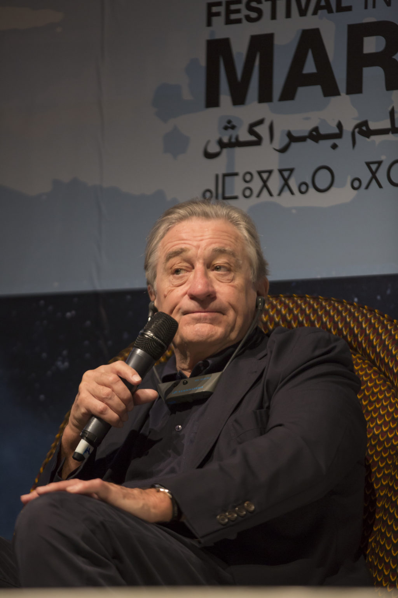
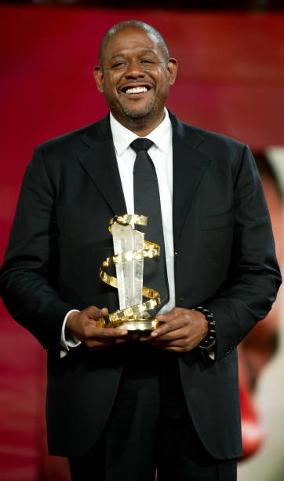
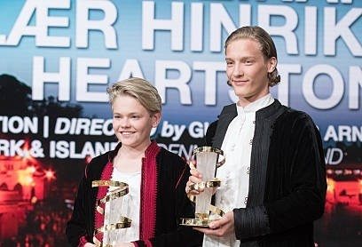
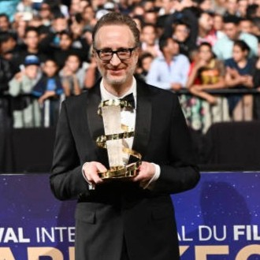
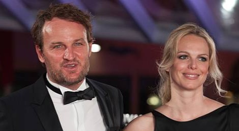
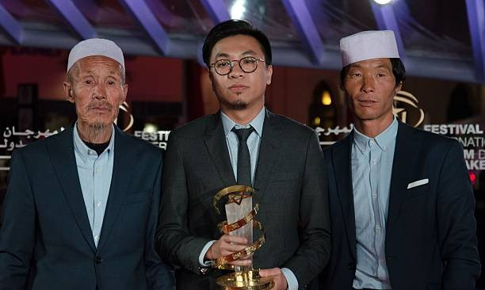
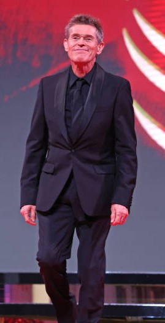
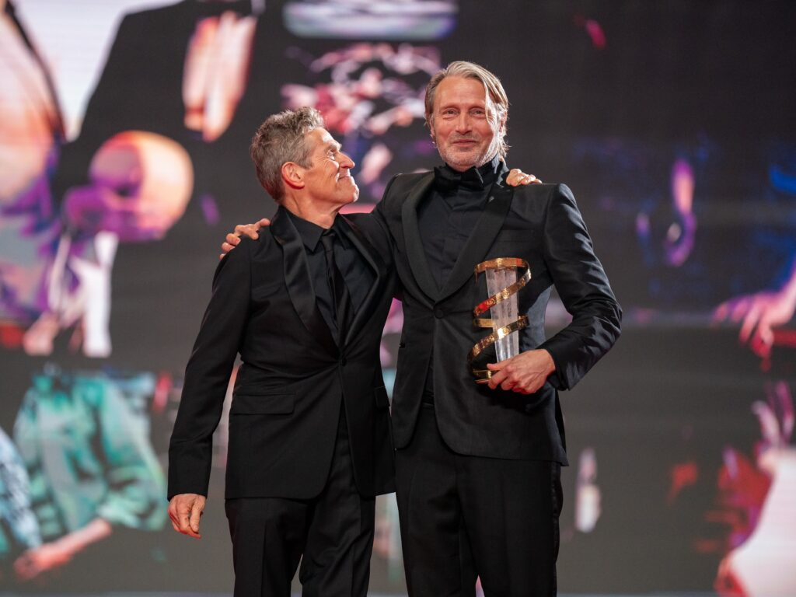
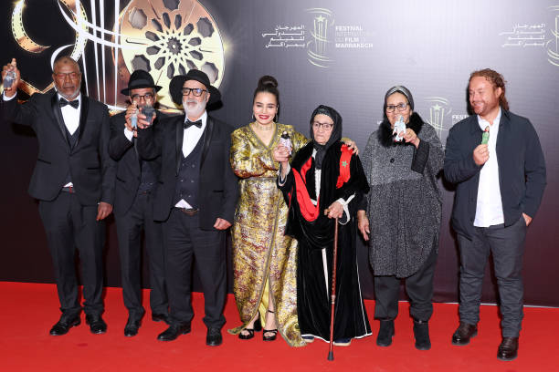
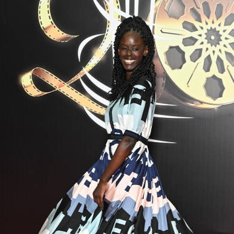

FFIM
Festival International du Film de Marrakech
ABOUT
Qu'est-ce que le FIFM ?
FIFM , ou Festival International du Film de Marrakech, est un événement cinématographique majeur au Maroc. Il rassemble des cinéastes, acteurs, réalisateurs et cinéphiles du monde entier pour célébrer le cinéma. Le festival propose une programmation diversifiée, avec des films du monde entier, des compétitions internationales, des hommages à des cinéastes renommés, des ateliers et des rencontres professionnelles. Il offre également des projections en plein air et des événements culturels, faisant de lui un rendez-vous incontournable pour les amateurs de cinéma.
20th Edition Opening Ceremony of the Marrakech Festival
À propos du FIFM
| Catégorie | Détails |
|---|---|
| Fondé | 2001 |
| Lieu | Marrakech, Maroc |
| Prix | Étoile d'Or (Meilleur film), Meilleur acteur/actrice, Meilleur documentaire |
| Focus | Cinéma international, marocain, africain et arabe |
| Sections | Compétition officielle, Ciné-Souks, Cinécoles |
| Programmes éducatifs | Ateliers, Masterclasses |
| Invités | Hommages aux réalisateurs (ex. : Scorsese, Almodóvar) |
| Lieux | Palais des Congrès, Jemaa el-Fnaa |
| Prochain Festival | Novembre 2024 (détails du programme à venir) |
IMAGES










EDITIONS
Éditions récentes du Festival International du Film de Marrakech
| Edition | Année | Points forts | Invités Notables | Prix |
|---|---|---|---|---|
| 19e Édition | 2020 | Format virtuel en raison de la COVID-19 ; Focus sur le cinéma africain. | N/A (Édition virtuelle) | Aucun prix officiel en raison du format virtuel. |
| 18e Édition | 2019 | Films du monde entier, avec un focus particulier sur le cinéma arabe ; Hommage à Robert De Niro. | Robert De Niro, Martin Scorsese, Scarlett Johansson | Étoile d'Or : Parasite (Corée du Sud). |
| 17e Édition | 2018 | Accent sur le cinéma africain et l'éducation cinématographique ; Rétrospective du cinéma iranien. | Oliver Stone, Marion Cotillard, Tim Roth | Étoile d'Or : The Nile Hilton Incident (Suède). |
| 16e Édition | 2017 | Focus sur le cinéma mondial, mettant en lumière des voix diverses et un échange culturel. | Pedro Almodóvar, Isabelle Huppert, Jeremy Irons | Étoile d'Or : The Wound (Afrique du Sud). |
| 15e Édition | 2016 | Hommage spécial à Martin Scorsese ; Célébration du cinéma marocain et africain. | Martin Scorsese, Clint Eastwood, Susan Sarandon | Étoile d'Or : The Salesman (Iran). |
| 14e Édition | 2015 | Hommage au cinéma français et focus sur les films nord-africains ; Rétrospective Jacques Demy. | Catherine Deneuve, Quentin Tarantino | Étoile d'Or : The Lobster (Grèce). |
| 13e Édition | 2014 | Hommage à Jean-Paul Belmondo et focus sur les cinéastes marocains et arabes. | Jean-Paul Belmondo, Martin Scorsese | Étoile d'Or : Court (Inde). |
LOCATION
Les Lieux Principaux du FIFM
Palais des Congrès
- Adresse : Avenue Mohammed VI, Hivernage, Marrakech, Maroc
- Description : Le Palais des Congrès est le principal lieu où se déroulent de nombreuses projections officielles, événements, et masterclasses pendant le festival. C'est un centre de conférences moderne situé dans le quartier Hivernage de Marrakech.
Jemaa el-Fnaa
- Adresse : Place Jemaa el-Fnaa, Médina, Marrakech, Maroc
- Description : La place Jemaa el-Fnaa est l'un des lieux les plus emblématiques de Marrakech. Pendant le festival, elle accueille des projections en plein air, des événements publics et des rassemblements spéciaux, créant une ambiance festive et animée dans le cœur de la ville.